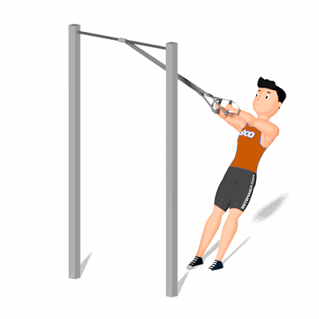

Crucifixo Inverso no TRX

É uma excelente exercício de musculação para treinar os músculos das costas como o grande dorsal, trapézio, redondos e romboides.
Ficha Técnica
Tipo: Funcional
Grupo Muscular: Costas
Aparelho: Nenhum
Músculos: Nenhum
Como realizar
- Agarre os estrados com as mãos e deixe o corpo inclinar-se um pouco para trás, até que os braços fiquem completamente retos;
- Mantendo sempre as mãos alinhadas com os ombros;
- Puxe o seu corpo para a frente ao mesmo tempo que afasta os estrados para os lados;
- Em seguida realize o movimento inverso, descendo o corpo de forma controlada.
 RC STORE
RC STORE